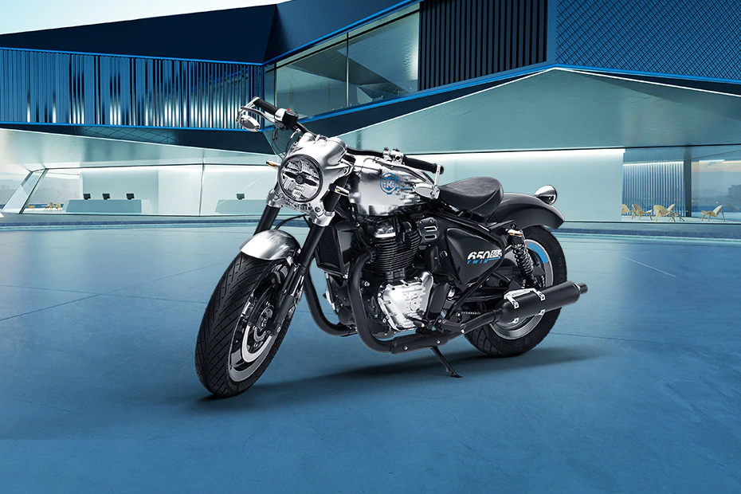

НОВЫЙ КЛАССИЧЕСКИЙ РОДСТЕР ROYAL ENFIELD SHOTGUN 650 ВСЕ ЖЕ ВЫЙДЕТ НА РЫНОК. ОПУБЛИКОВАНЫ ФОТОДОКАЗАТЕЛЬСТВА
В прошлом году компания Royal Enfield представила концепт нового родстера SG650, который, как и большинство продуктов марки, был выдержан в классическом стиле.